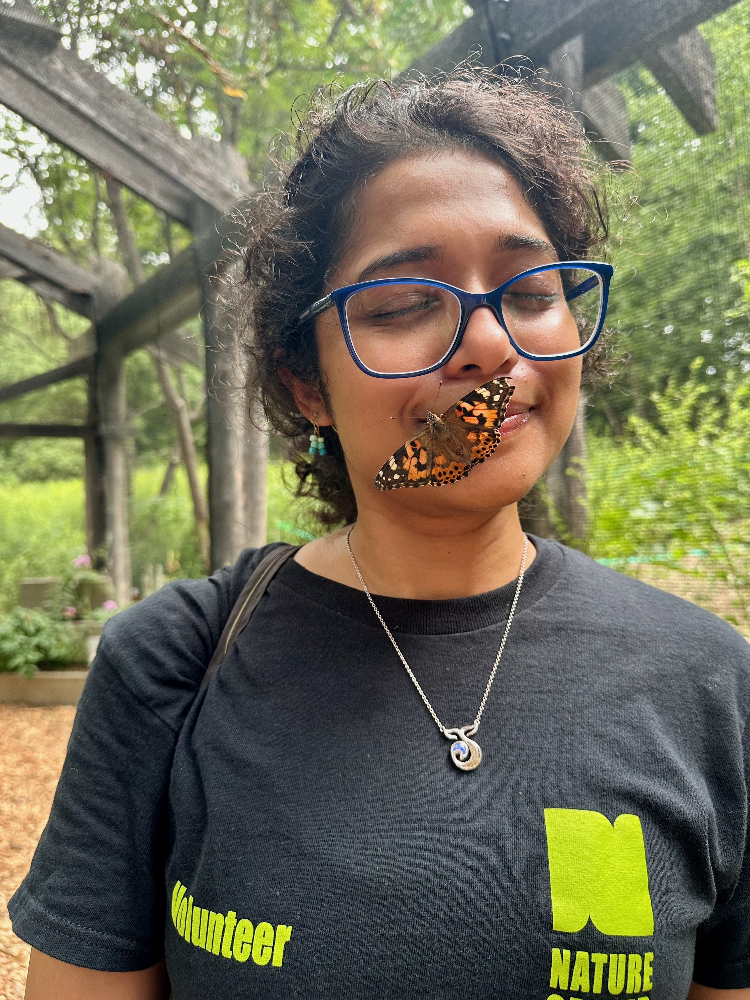

My Journey with the Natural World: From Passion to Practice
My love for the natural world has been my main motivation to volunteer for various nature programmes. I have focused on doing hands-on work in the field and contributing to community outreach. Through my training and roles at a local nature centre and NYC Parks, I am gaining the necessary experience and knowledge to move from an observer to an active participant. The following sections detail my work in public education and habitat monitoring, through which I continue to develop my skills in conservation.

The butterfly (Painted Lady) likes me!